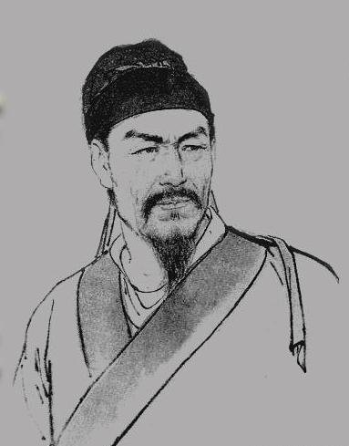

宋词简介| 辛弃疾 词选 | 李清照 词选 | 温庭筠 词选

------永遇乐·京口北固亭怀古| 鹧鸪天·送人| 破阵子·为陈同甫赋壮词以寄之------
千古江山，英雄无觅，孙仲谋处。舞榭歌台，风流总被，雨打风吹去。
斜阳草树，寻常巷陌，人道寄奴曾住。想当年，金戈铁马，气吞万里如虎。
元嘉草草，封狼居胥，赢得仓皇北顾。四十三年，望中犹记，烽火扬州路。
可堪回首，佛狸祠下，一片神鸦社鼓。凭谁问，廉颇老矣，尚能饭否？
赏析：作者是怀着深重的忧虑和一腔悲愤写这首词的。上片赞扬
在京口建立霸业的孙权和率军北伐，气吞胡虏的刘裕，表示要像他们一样金戈铁
马为国立功。下片借讽刺刘义隆表明自己坚决主张抗金但反对冒进误国的立场和态度。
唱彻《阳关》泪未干，功名馀事且加餐。浮天水送无穷树，带雨云埋一半山。
今古恨，几千般，只应离合是悲欢？江头未是风波恶，别有人间行路难!
赏析：这是一首送人离别之作，但其中颇有世路艰难之感，
反映了作者当时已历经仕途挫折，心中深有感慨。
醉里挑灯看剑，梦回吹角连营。
八百里分麾下炙，五十弦翻塞外声。沙场秋点兵。
马作的卢飞快，弓如霹雳弦惊。
了却君王天下事，赢得生前身后名。可怜白发生！
赏析：此词通过对作者早年抗金部队豪壮的
阵容和气概以及自己沙场生涯的追忆，表达了作者杀敌报国
、收复失地的理想，抒发了壮志难酬、英雄迟暮的悲愤心情
；通过创造雄奇的意境，生动地描绘出一位披肝沥胆、忠一
不二、勇往直前的将军形象。全词在结构上打破成规，前九
句为一意，末一句另为一意，以末一句否定前九句，前九句写
得酣恣淋漓，正为加重末五字失望之情，这种艺术手法体现了
辛词的豪放风格和独创精神。
©淘气汉子Urchins